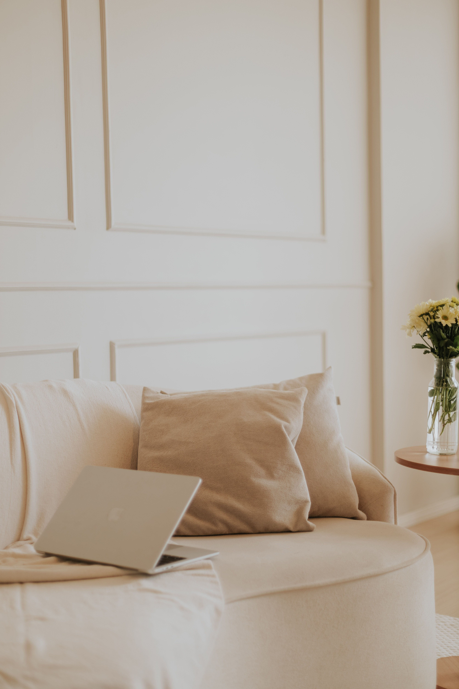

En este artículo
Introducción
Un balcón pequeño puede convertirse en una extensión agradable de la casa si se organiza con una distribución clara, muebles proporcionados, vegetación adecuada y detalles que no bloqueen la circulación.
Antes de realizar cambios conviene observar el espacio, medir y definir qué problema quieres resolver. Trabajar con una intención clara evita compras impulsivas y ayuda a que cada decisión aporte comodidad, orden o identidad.
Planifica la distribución del balcón
Antes de comprar una silla o una maceta, mide largo, ancho, altura de barandilla y apertura de puertas. Dibuja un esquema sencillo y marca el espacio que debe quedar libre para circular. Un balcón estrecho puede perder funcionalidad con un mueble apenas unos centímetros demasiado profundo.
Define un uso principal. Si quieres desayunar fuera, necesitas una superficie estable y al menos uno o dos asientos. Si prefieres leer, quizá una silla cómoda y una mesa auxiliar sean suficientes. Si el objetivo es cultivar plantas, la distribución debe priorizar luz, riego y acceso. Intentar instalar comedor, huerto, zona de descanso y almacenamiento en dos metros cuadrados suele producir saturación.
Observa el sol y el viento durante varios días. Un balcón orientado al oeste puede recibir calor intenso por la tarde; uno alto y expuesto puede necesitar muebles más pesados y macetas estables. La lluvia también influye en materiales y ubicación.
Mantén despejada la salida desde el interior. Los objetos no deberían impedir abrir completamente una puerta ni dificultar una evacuación. También respeta las normas de la comunidad y la seguridad de barandillas, especialmente al colgar jardineras.
Una buena distribución no se mide por cuántos elementos caben, sino por cuán cómodo resulta utilizar el espacio.
Para tomar decisiones con más seguridad, conviene trabajar por etapas y evaluar el resultado antes de seguir. Una modificación sencilla puede resolver más de lo esperado. Cuando se cambia distribución, color o iluminación, espera unos días y observa el espacio en diferentes momentos. La luz natural, el uso cotidiano y la circulación revelan aspectos que no aparecen en una fotografía de inspiración.
El presupuesto también debe formar parte del diseño. Define primero las necesidades y después asigna dinero a las piezas que realmente afectan al confort. Comprar varios accesorios económicos sin planificación puede costar lo mismo que una sola solución de mayor utilidad. Reutilizar, mover y editar lo existente es parte de una decoración inteligente.
Elige muebles proporcionados y funcionales
En balcones pequeños, la escala del mobiliario es decisiva. Las mesas redondas compactas suavizan los recorridos; las abatibles fijadas a pared o barandilla pueden liberar el suelo cuando no se usan. Las sillas plegables permiten cambiar de configuración según el momento.
Antes de elegir muebles de exterior, comprueba que el material tolere sol, humedad y cambios de temperatura. La madera necesita cuidados específicos; ciertos metales requieren protección frente a corrosión; los materiales sintéticos varían mucho en calidad. Lee siempre las indicaciones del fabricante.

Los bancos con almacenamiento pueden ser útiles si están diseñados para exterior y no bloquean drenajes. Sirven para guardar cojines o pequeños utensilios, aunque los textiles delicados no deberían permanecer en compartimentos donde pueda entrar humedad.
Evita conjuntos voluminosos “de terraza” en un balcón estrecho. Muchas veces una sola silla cómoda ofrece más calidad de uso que dos asientos incómodos. Si viven varias personas, considera muebles que puedan sacarse o plegarse según necesidad.
Deja margen alrededor de los muebles. La sensación de amplitud depende tanto del espacio vacío como de las piezas elegidas.
El mantenimiento futuro debe influir en cada elección. Los materiales muy delicados, los textiles difíciles de lavar o los objetos que requieren cuidados constantes pueden resultar atractivos al principio y convertirse después en una carga. Pregúntate cuánto tiempo estás dispuesto a dedicar a limpieza y conservación.
La seguridad merece la misma atención. Muebles altos deben fijarse cuando corresponda, alfombras necesitan estabilidad, instalaciones eléctricas deben ser apropiadas y los objetos pesados no deberían quedar en posiciones de riesgo. Un espacio bonito tiene que seguir siendo cómodo y seguro para quienes lo usan.
Aprovecha paredes y altura
Cuando el suelo es escaso, las paredes y la altura permiten añadir vegetación y almacenamiento. Estantes estrechos, jardineras verticales o soportes correctamente fijados pueden concentrar macetas sin invadir el paso. Cualquier elemento colgado debe instalarse de forma segura y respetar límites de carga.
Las plantas deben elegirse por las condiciones reales. Sol, sombra, viento y tamaño de la maceta influyen más que una fotografía inspiradora. Agrupa especies con necesidades de riego similares y evita colocar plantas que alcancen gran volumen justo en el recorrido.
Las barandillas pueden admitir jardineras específicas si están permitidas y correctamente aseguradas. No improvises con macetas apoyadas de forma inestable. En pisos altos, la caída de un objeto representa un riesgo serio.
También puedes utilizar una pared para iluminación decorativa apta para exterior. Apliques o guirnaldas diseñadas para intemperie permiten crear ambiente sin ocupar mesas. Las conexiones eléctricas deben estar protegidas según las condiciones del lugar.
El objetivo vertical es liberar el suelo, no trasladar el desorden a las paredes. Deja zonas vacías para mantener sensación de calma.

La decoración funciona mejor cuando existe una jerarquía visual. Elige uno o dos puntos de interés y permite que el resto acompañe. Si cada pared, mueble y accesorio intenta llamar la atención al mismo tiempo, la habitación se percibe más pequeña y menos serena.
Repetir materiales o colores crea continuidad. No significa comprar conjuntos idénticos, sino establecer relaciones: un tono de un cuadro puede aparecer en un cojín; una madera puede repetirse en un marco; un acabado metálico puede conectar lámpara y tiradores. Estas pequeñas repeticiones hacen que el espacio se sienta pensado.
Decora sin perder espacio útil
Una paleta limitada ayuda a que el balcón se vea más ordenado. Repetir dos o tres colores en cojines, macetas y textiles crea cohesión. Los tonos claros pueden reflejar más luz, mientras que los oscuros aportan contraste; ninguno hace milagros si el espacio está saturado.
Los textiles deben ser fáciles de retirar y limpiar. Cojines con fundas lavables, una pequeña alfombra de exterior y una manta ligera pueden aportar confort, pero evita materiales que absorban agua y permanezcan húmedos durante días.
La iluminación nocturna cambia mucho el uso del balcón. Una luz general muy intensa puede resultar poco acogedora. Varias fuentes suaves, siempre aptas para exterior, suelen producir un ambiente más agradable.
Añade personalidad con pocos objetos. Una regadera bonita que realmente utilices, una maceta especial o una pieza artesanal pueden ser suficientes. Las superficies libres facilitan servir una bebida, apoyar un libro o cuidar plantas.
Revisa periódicamente qué funciona. Si una maceta siempre estorba o una silla nunca se usa, retírala. En espacios pequeños, cada elemento debe justificar el lugar que ocupa.
Por último, deja margen para que el espacio evolucione. Las necesidades cambian y la decoración no debería impedir adaptaciones. Evita llenar todos los huecos desde el primer día. Una casa personal se construye con el tiempo, incorporando piezas que tienen sentido y retirando aquellas que dejan de cumplir una función.
Revisar el espacio cada pocos meses ayuda a controlar acumulación y mantener coherencia. Si algo nunca se usa, siempre estorba o exige demasiado mantenimiento, quizá no merece el lugar que ocupa.
Consejos adicionales para mantener el resultado
Durante la temporada de lluvias o frío, adapta el balcón. Guarda textiles que puedan deteriorarse, revisa drenajes y comprueba que ninguna maceta bloquee la salida del agua. En épocas de calor, observa qué superficies acumulan temperatura y protege las plantas que no toleren exposición intensa.

Una limpieza regular mantiene el espacio utilizable. Barrer hojas, limpiar barandillas y revisar macetas evita que el balcón se convierta en una zona de almacenamiento. Dedicar diez minutos por semana suele ser suficiente para mantener el control.
Si necesitas privacidad, utiliza soluciones ligeras compatibles con la normativa: plantas, celosías o textiles diseñados para exterior. Asegúralos bien frente al viento y evita cerrar completamente la ventilación.
Plan práctico para aplicar los cambios sin equivocarse
Empieza con una lista de tres prioridades y ordénalas por impacto. Por ejemplo: mejorar circulación, resolver almacenamiento y después trabajar la estética. Esta secuencia evita dedicar presupuesto a accesorios cuando todavía existe un problema funcional sin resolver.
Realiza una prueba temporal siempre que sea posible. Mueve muebles, coloca cinta para representar una alfombra o cuelga plantillas de papel antes de perforar. Vivir con esa propuesta durante unos días permite detectar molestias reales antes de gastar dinero o realizar cambios difíciles de revertir.
Haz una fotografía desde los principales puntos de vista. La cámara simplifica la escena y ayuda a detectar proporciones, acumulación y zonas vacías. Después compara con el objetivo inicial y decide si todavía falta algo o si el espacio ya funciona.
Por último, establece un límite de compras. Cada elemento nuevo debería resolver una necesidad, sustituir algo o aportar un valor visual claro. Si no puedes explicar qué función cumple, espera unos días antes de adquirirlo. Esta regla sencilla protege presupuesto y evita que el espacio vuelva a saturarse.
Mantenimiento del balcón a lo largo del año
Un balcón pequeño se mantiene agradable cuando las revisiones son breves pero constantes. En primavera conviene comprobar el estado de macetas, soportes, textiles y muebles antes de aumentar el uso. Limpia drenajes y revisa si el invierno dejó óxido, madera reseca o tornillos flojos.
Durante el verano, presta atención al sol intenso y al riego. Las macetas pueden secarse con rapidez y algunos materiales se calientan demasiado. En otoño, retira hojas y comprueba que el agua de lluvia pueda salir sin obstáculos. En invierno, guarda cojines y objetos delicados cuando el clima lo exija.
También es útil revisar el peso total concentrado en determinadas zonas y no sobrecargar barandillas o estructuras. Si tienes dudas sobre límites de carga, consulta la documentación del edificio o a un profesional. La decoración exterior debe ser bonita, pero también segura y fácil de mantener.
Preguntas frecuentes
¿Cuál es la mejor manera de empezar a decorar un balcón pequeño?
Mide el espacio, define el uso principal y deja libre el recorrido hacia puertas y ventanas. Después elige muebles adaptados a esas medidas.
¿Qué muebles funcionan mejor en pocos metros?
Los plegables, apilables, estrechos o con almacenamiento integrado suelen ser útiles porque permiten adaptar el balcón según la actividad.
¿Qué errores deberían evitarse?
Evita llenar el suelo con demasiadas macetas, comprar muebles sin medir y utilizar elementos que no estén preparados para la exposición exterior.
Conclusión
Renovar o decorar un espacio no depende de llenarlo de objetos nuevos. En cómo decorar un balcón pequeño y aprovechar cada centímetro, las mejores decisiones son aquellas que mejoran el uso cotidiano, respetan las proporciones y pueden mantenerse con facilidad. Medir, observar, reutilizar y avanzar por etapas permite conseguir un resultado personal y duradero sin perder funcionalidad.